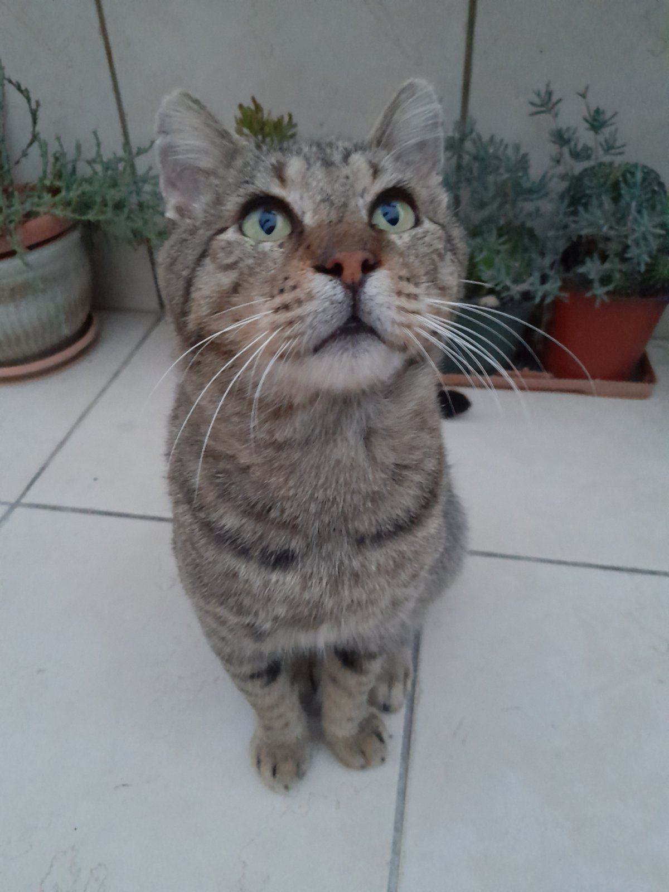

~.~.~.~.~.~.~ Tom the cat! ~.~.~.~.~.~.~

O Tom είναι ο γάτος μου. Είναι 7 χρονών και είναι πολύ τεμπέλης. Όλη μέρα κοιμάτε και δεν έχει καθόλου υποχρεώσεις! Είναι πολύ χαδιάρης και τον αγαπάω πολύ :)

O Tom είναι ο γάτος μου. Είναι 7 χρονών και είναι πολύ τεμπέλης. Όλη μέρα κοιμάτε και δεν έχει καθόλου υποχρεώσεις! Είναι πολύ χαδιάρης και τον αγαπάω πολύ :)